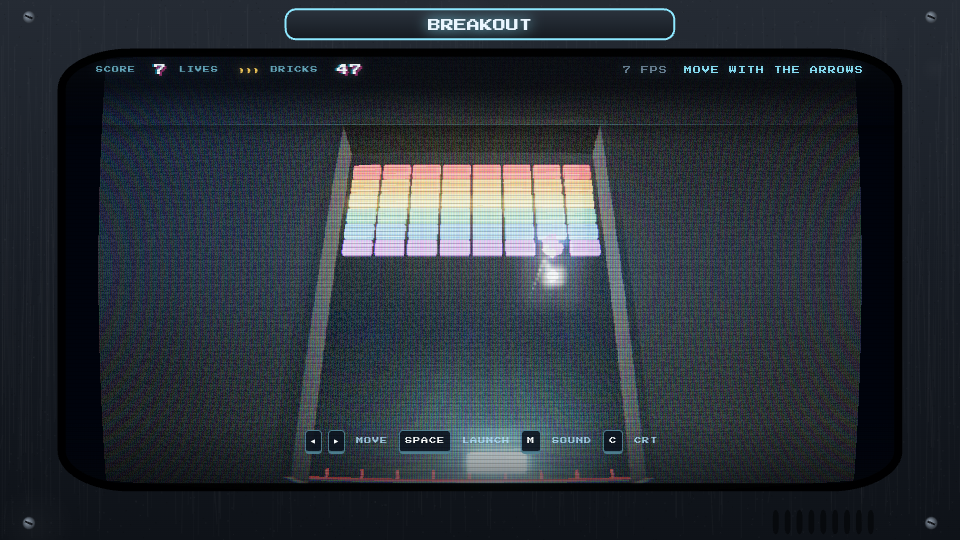
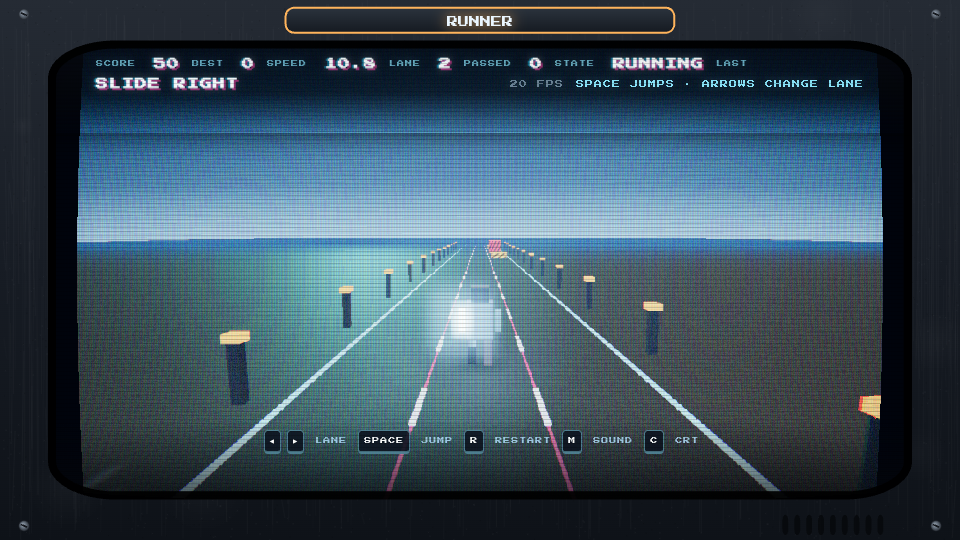
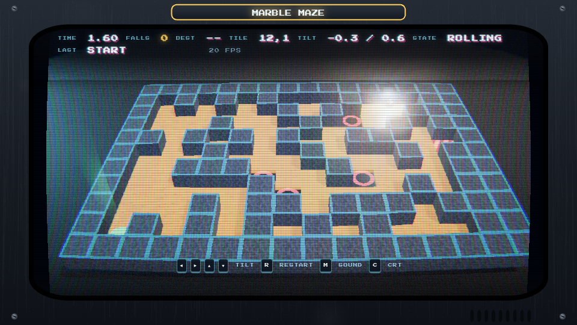
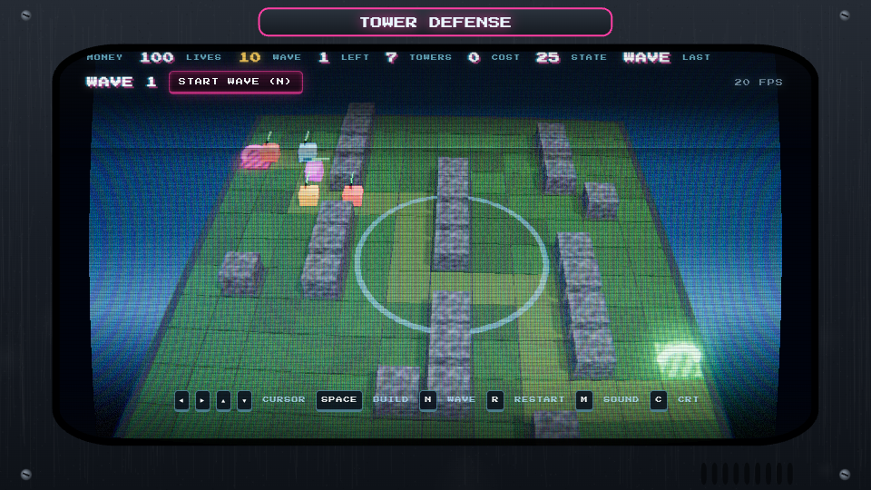
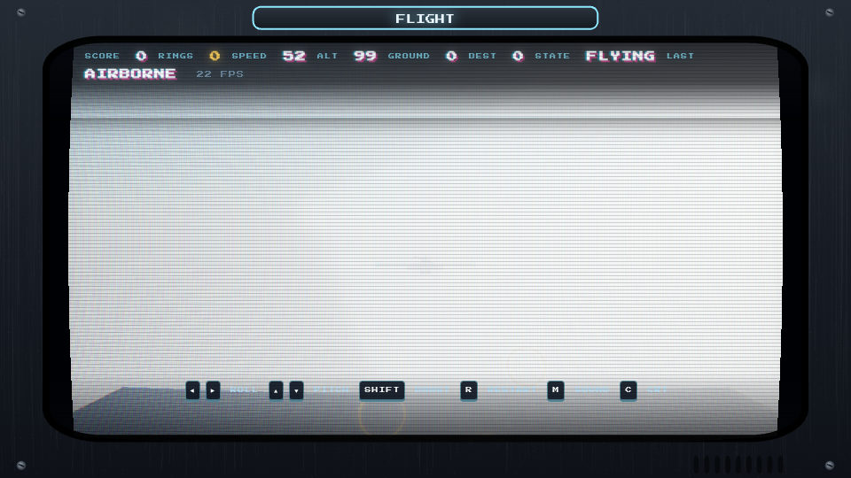

FIVE GAMES
Three.js, 0.170.0 from a CDN, plain static files — no build step, no npm, no server. All five run on one shared arcade kit: a CRT and cabinet bezel, procedural textures, particles, bloom, WebAudio sound and a HUD in the same typeface. Click a cabinet.

1 · Breakout
Neon room, PMREM reflections, ball trail, brick shatter, shockwave rings, camera shake, 53 bricks.

2 · Runner
Chrome runner on a scrolling motorway: speed ramps, three lanes, jump the hurdles, slide under the tall ones.

3 · Marble Maze
A wooden board in real physics (cannon-es): tilt it, roll the chrome marble to the green pad, miss a tile and you fall.

4 · Tower Defense
The enemies path-find, and re-path around whatever you build. A tower that seals the lane is refused, so placement is a decision.

5 · Flight
Infinite terrain from 60 lines of noise, flat-shaded by height, sky and fog, bank-to-turn jet, ring gates that burst and recycle.